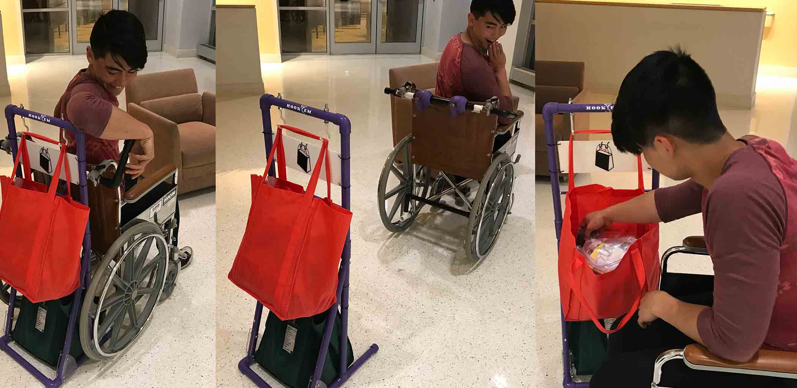

Shop Drop Roll LLC
Shop Drop Roll LLC is a provisionally patented attachment for manual wheelchairs that simplifies the transport and accessibility of goods. We have received awards from the Babson BETA Challenge and Northeast ARC Foundation ($2,500 each) and were featured in Caitrin Lynch's TEDx talk on design thinking. The device was initially designed during "Engineering for Humanity," a class where students design a working prototype with and for an older adult to help improve an aspect of their life. Our four person team worked directly with Terri, an older woman who uses a wheelchair, deriving our design from interactions with her. Shop Drop Roll enables the user to load bags on the device, detach it from their wheelchair, and turn around to access their groceries, making it easier to go shopping and carry belongings. Working with three other teammates, this project gave me the opportunity to do fieldwork with users, implement design thinking and practices, create patent drawings and designs in Solidworks, and conduct pilot testing of our prototype.
Concept Discovery
After shopping in an electric scooter, Terri and the bagger fill two large cooler bags on her chair. One sits on the back of her wheelchair and the other in her lap alongside a six pack of paper towels. Terri then waits thirty minutes to an hour for a wheelchair accessible bus to pick her up. While our team also explored ideas related to cooking and getting into bed, brainstorming and creating low-fidelity, cardboard sketch models, but we were ultimately convinced that we could make her grocery shopping experience less taxing and enable her to be more independent.
Our initial ideation process lead to sketching and designing cabinet attachments for the back of her chair that would help Terri sort and carry a large number of groceries. As we began designing, we realized we were designing for the wrong problem. Rather than designing something that can help Terri buy a large number of groceries, we realized by connecting our design back to Terri's desire for a more social, independent lifestyle that we should design a product that can help her go shopping more often rather than enabling her giant shopping trips. This would reduce the need to buy a large number of groceries on each trip. Our new approach to the project helped us to develop the initial concept for Shop Drop Roll.
Rapid Prototyping
Product Design Decisions
Beyond the Classroom
Terri now uses our prototype every time she goes grocery shopping, buying less food in one trip and going out of the house more often. Rather than waiting for the bus with bags in her lap, Terri can now explore nearby clothing stores after getting her groceries. She even used our product to carry her eighty pounds of luggage on vacation. We used our funding to hold a booth at the 2018 Boston Abilities Expo and garnered interest in the product and a set of early stage pilot testers to help us bring the product to other wheelchair users.